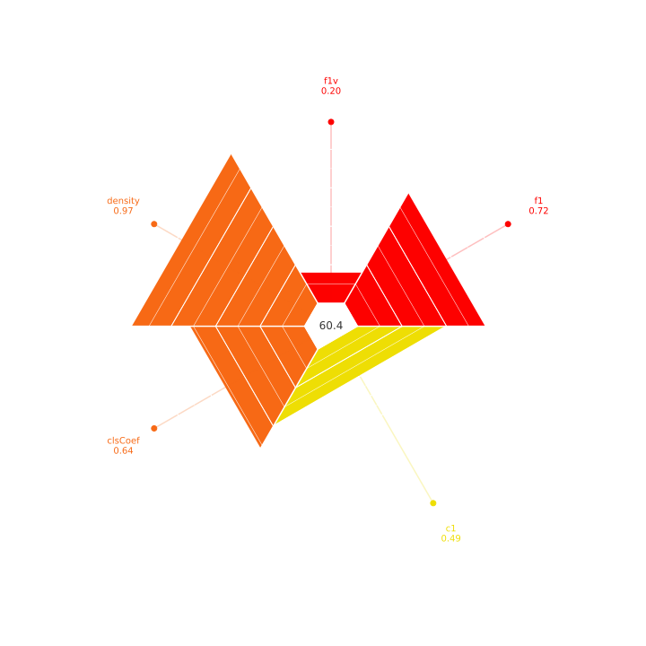

Complexity of the Dataset
n_samples
1143
n_features
12
score
0.604
n_classes
6
classes
6
prior_probability
[0.00524934 0.02887139 0.42257218 0.40419948 0.12510936 0.01399825]
complexities_std
{'f1': 0.211, 'f1v': 0.152, 'density': 0.014, 'clsCoef': 0.148, 'c1': 0.301}
Complexities
f1
Calculates the Maximum Fisher’s discriminant ratio (F1) metric.
Measure describes the overlap of feature values in each class.
RESULT: 0.717
f1v
Calculates the Directional vector maximum Fisher’s discriminant ratio (F1v) metric.
RESULT: 0.199
density
Calculates the Density metric.
Generates an epsilon-Nearest Neighbours graph. The epsilon value is set to 0.15. The edges are selected based on the Gower distance between samples, normalized to the range between 0 and 1. Edges between instances of distinct classes are removed. The measure calculates the number of edges in the final graph divided by the total possible number of edges.
RESULT: 0.972
clsCoef
Calculates the Clustering Coefficient metric.
Generates an epsilon-Nearest Neighbours graph. The epsilon value is set to 0.15. The edges are selected based on the Gower distance between samples, normalized to the range between 0 and 1. Edges between instances of distinct classes are removed. The neighborhood of each vertex is calculated – the instances directly connected to it. Then, the number of edges between the sample’s neighbors is calculated and divided by the maximum possible number of edges between them. The final measure is calculated based on the neighborhood of each point.
RESULT: 0.643
c1
Calculates the Entropy of Class Proportions (C1) metric.
RESULT: 0.489
Complexity plot
